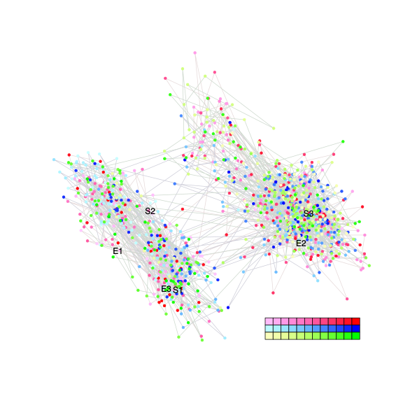
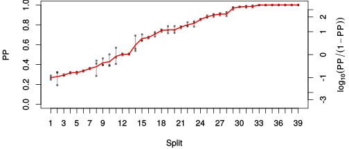
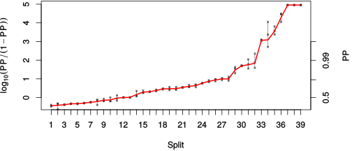

| chain # | burnin | subsample | Iterations (remaining) | command line | subdirectory | directory |
|---|---|---|---|---|---|---|
| 1 | 10000 | 1 | 90000 | /usr/local/bali-phy-3.0-beta2/bin/bali-phy cat_E6_E7_AA_red3_v2_selAll_all4Manatees_PePV1.fas -s 52943 -n cat_E6_E7_red3_v2_sellAll_all4Manatees_PePV1_c1 | cat_E6_E7_red3_v2_sellAll_all4Manatees_PePV1_c1-1 | /home/willemse/data/trees/BaliPhy |
| 2 | 10000 | 1 | 90000 | /usr/local/bali-phy-3.0-beta2/bin/bali-phy cat_E6_E7_AA_red3_v2_selAll_all4Manatees_PePV1.fas -s 15712 -n cat_E6_E7_red3_v2_sellAll_all4Manatees_PePV1_c2 | cat_E6_E7_red3_v2_sellAll_all4Manatees_PePV1_c2-1 | /home/willemse/data/trees/BaliPhy |
| 3 | 10000 | 1 | 90000 | /usr/local/bali-phy-3.0-beta2/bin/bali-phy cat_E6_E7_AA_red3_v2_selAll_all4Manatees_PePV1.fas -s 72721 -n cat_E6_E7_red3_v2_sellAll_all4Manatees_PePV1_c3 | cat_E6_E7_red3_v2_sellAll_all4Manatees_PePV1_c3-1 | /home/willemse/data/trees/BaliPhy |
| P(data|M) = -19083.055 +- 0.889 | Complete sample: 179635 topologies | 95% Bayesian credible interval: 166623 topologies |
Phylogeny Distribution

| Partition support: Summary |
| Partition support graph: SVG |
{kind=link}
| 50% consensus | Newick (+PP) | SVG | |||||
| 66% consensus | Newick (+PP) | SVG | |||||
| 80% consensus | Newick (+PP) | SVG | |||||
| 90% consensus | Newick (+PP) | SVG | |||||
| 95% consensus | Newick (+PP) | SVG | |||||
| 99% consensus | Newick (+PP) | SVG | |||||
| 100% consensus | Newick (+PP) | SVG | |||||
| MAP | Newick (+PP) | SVG | |||||
| greedy | Newick (+PP) | SVG |
{kind=link}
{kind=link}
{kind=link}
{kind=link}
{kind=link}
{kind=link}
{kind=link}
{kind=link}
Alignment Distribution
Partition 1
| Diff | Min. %identity | # Sites | Constant | Informative | ||||
|---|---|---|---|---|---|---|---|---|
| Initial | FASTA | HTML | Diff | 0.837% | 332 | 1 (0.301%) | 323 (97.3%) | |
| Best (WPD) | FASTA | HTML | AU | 0.629% | 1204 | 1 (0.0831%) | 449 (37.3%) |
Mixing
{kind=link}
{kind=link}
| burnin (scalar) | ESS (scalar) | ESS (partition) | ASDSF | MSDSF | PSRF-CI80% | PSRF-RCF |
|---|---|---|---|---|---|---|
| 1295 | 148.1 | 29.001 | 0.019 | 0.083 | 1.002 | 1.01 |
Projection of RF distances for the first 3 chains3D | Variation of split PPs across chains |
Scalar variables
| Statistic | Median | 95% BCI | ACT | ESS | burnin | PSRF-CI80% | PSRF-RCF |
|---|---|---|---|---|---|---|---|
| prior | -1657 | (-1786, -1537) | 188 | 1436 | 613 | 1.002 | 1.004 |
| prior_A1 | -1802 | (-1929, -1683) | 186.5 | 1447 | 530 | 1.001 | 1.004 |
| likelihood | -1.901e+04 | (-1.908e+04, -1.895e+04) | 252.7 | 1068 | 458 | 1 | 1.007 |
| logp | -2.067e+04 | (-2.078e+04, -2.057e+04) | 90.86 | 2971 | 641 | 1.001 | 1.002 |
| Heat.beta | 1 | ||||||
| Scale1 | 21.38 | (16.11, 27.66) | 1.049 | 257269 | 127 | 0.9999 | 1.002 |
| S1.F.pi.A | 0.06131 | (0.05493, 0.06794) | 9.082 | 29730 | 209 | 1 | 0.9997 |
| S1.F.pi.R | 0.06308 | (0.05595, 0.07049) | 13.34 | 20246 | 331 | 0.9999 | 1 |
| S1.F.pi.N | 0.0329 | (0.02836, 0.03755) | 8.712 | 30991 | 374 | 0.9998 | 1.003 |
| S1.F.pi.D | 0.05522 | (0.04872, 0.06191) | 27.9 | 9678 | 439 | 1 | 0.9962 |
| S1.F.pi.C | 0.05075 | (0.04349, 0.0586) | 9.579 | 28186 | 389 | 0.9996 | 1.01 |
| S1.F.pi.Q | 0.03622 | (0.03177, 0.0409) | 9.547 | 28282 | 670 | 1 | 1.002 |
| S1.F.pi.E | 0.06343 | (0.05653, 0.07046) | 47.98 | 5627 | 586 | 0.9999 | 1.006 |
| S1.F.pi.G | 0.0781 | (0.06912, 0.08742) | 20.6 | 13104 | 274 | 1 | 0.9933 |
| S1.F.pi.H | 0.02621 | (0.02199, 0.03073) | 8.808 | 30652 | 353 | 0.9998 | 1.003 |
| S1.F.pi.I | 0.04404 | (0.03874, 0.04967) | 9.056 | 29815 | 400 | 1 | 0.9973 |
| S1.F.pi.L | 0.1077 | (0.0976, 0.1179) | 32.99 | 8183 | 747 | 1.001 | 1.005 |
| S1.F.pi.K | 0.03414 | (0.02957, 0.0389) | 9.053 | 29824 | 405 | 1 | 1 |
| S1.F.pi.M | 0.009251 | (0.006932, 0.01174) | 8.965 | 30118 | 828 | 1.001 | 0.994 |
| S1.F.pi.F | 0.04391 | (0.03794, 0.05038) | 12.98 | 20796 | 438 | 1.001 | 0.9976 |
| S1.F.pi.P | 0.05248 | (0.04551, 0.06002) | 19.44 | 13889 | 459 | 0.9998 | 1.001 |
| S1.F.pi.S | 0.06666 | (0.06024, 0.07324) | 9.272 | 29121 | 705 | 0.9995 | 1 |
| S1.F.pi.T | 0.0535 | (0.04753, 0.05956) | 8.558 | 31548 | 439 | 0.9995 | 0.9962 |
| S1.F.pi.W | 0.01782 | (0.01372, 0.02216) | 8.221 | 32843 | 237 | 1 | 1.001 |
| S1.F.pi.Y | 0.0439 | (0.03778, 0.05036) | 11.43 | 23619 | 347 | 0.9999 | 0.9979 |
| S1.F.pi.V | 0.05814 | (0.05158, 0.06472) | 12.03 | 22434 | 373 | 1 | 0.9996 |
| I1.RS07.meanIndelLengthMinus1 | 6.216 | (5.122, 7.442) | 65.46 | 4124 | 300 | 1.001 | 0.9998 |
| I1.RS07.logLambda | -4.009 | (-4.186, -3.838) | 15.19 | 17774 | 226 | 1 | 1 |
| |A1| | 1155 | (1066, 1247) | 1823 | 148 | 406 | 1 | 0.9811 |
| #indels1 | 214 | (195, 232) | 181.6 | 1486 | 344 | 0.9324 | 1.003 |
| |indels1| | 1572 | (1419, 1732) | 101.2 | 2668 | 1295 | 0.9951 | 1.003 |
| #substs1 | 3651 | (3572, 3721) | 538.7 | 501 | 546 | 0.9931 | 0.9923 |
| Scale1*|T| | 27.75 | (26.46, 29.07) | 19.55 | 13810 | 291 | 0.9998 | 1 |
| |A| | 1155 | (1066, 1247) | 1823 | 148 | 406 | 1 | 0.9811 |
| #indels | 214 | (195, 232) | 181.6 | 1486 | 344 | 0.9324 | 1.003 |
| |indels| | 1572 | (1419, 1732) | 101.2 | 2668 | 1295 | 0.9951 | 1.003 |
| #substs | 3651 | (3572, 3721) | 538.7 | 501 | 546 | 0.9931 | 0.9923 |
| |T| | 1.298 | (0.9661, 1.654) | 1.003 | 269241 | 125 | 1 | 1.002 |